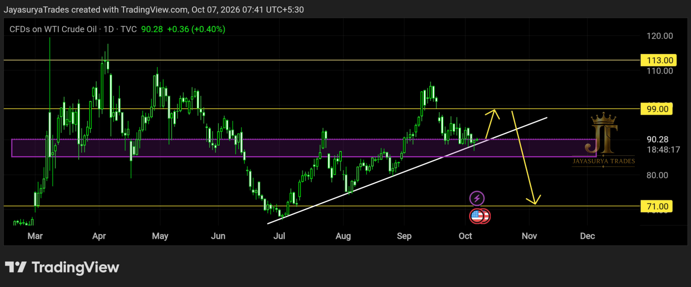

For this Wednesday Market Focus, I am looking at Crude Oil / USOIL and the current market structure around the 90.28 price area.
The market has been forming a clear upward trendline pattern, while the 90–85 area remains an important support zone. There was previously a gap down from around the 90 area to lower prices, and the immediate scenario I am watching is a potential upward move that could fill that gap and reach 99.
90–85 → Strong support zone
99 → Immediate upside / potential gap-fill area

Current Market Structure
From the current market structure, Crude Oil is not being viewed as being in an overall buy trend. The upward move I am watching is a short-span opportunity within the broader view, rather than a signal to treat the market as a confirmed bullish trend.
The key structure on the chart is the upward trendline. As long as price remains above that trendline, the market could potentially continue upward for a short span. The immediate objective I am watching is the 99 area, where the previous gap could potentially be filled.
90–85 — The Key Support Zone
The 90–85 range is the important support area in this analysis. Price is currently around 90.28, so this zone remains directly relevant to the immediate structure.
A break below the upward trendline would change the setup I am watching. I would want confirmation rather than reacting to an intraday move alone.
Potential Move Toward 99
The clean scenario for the next few days or next few weeks is that Crude Oil could potentially move upward and fill the previously formed gap down. If that move develops, 99 is the immediate level I am watching.
This does not mean the market has entered a confirmed buy trend. The move toward 99 would be treated as a short-span opportunity within the current structure. After the gap is filled, I would wait rather than continue looking for buy entries.
Area being watched: 99
Reason: potential filling of the previous gap down
After the gap is filled: wait for trendline confirmation
Trendline Break — The Confirmation I Am Waiting For
If the market breaks below the upward trendline I have drawn, the focus can shift toward sell setups. I would look for stronger confirmation if the trendline is broken with a daily close or 4-hour close.
If that downside break is confirmed, the market could enter a downtrend and we can start looking for good sell setups. Until that confirmation appears, the immediate upward move toward 99 remains the scenario I am watching.
For Short-Span Traders
Until the market reaches the 99 area, the focus can remain on short-span setups that align with the upward structure. The broader view should not be treated as a confirmed buy trend.
After 99
Once the potential gap-fill area around 99 is reached, I would wait for the market to show what it wants to do next. I would not continue forcing buy entries after the gap is filled. The next important confirmation would be a downside break of the upward trendline.
The Larger Downside Scenario
If the market reaches the 99 area and then turns lower, the larger downside scenario I am watching is a move toward 71. In this scenario, the 90–85 support range would need to be broken as the market develops the broader decline.
This is a conditional scenario, not a prediction that the market must fall. The important point is to wait for the structure and confirmation before looking for the larger sell move.
Ignore the Noise — Follow the Chart
There is a lot of information spreading across social media about crude oil, including claims that oil prices must rise because of war, attacks or pressure involving Russia. I would not make a trading decision based on those kinds of social-media narratives.
Do not buy into unverified information simply because it is widely being repeated. The focus here is the price structure and the facts visible on the chart. The market can react differently from what social media expects, and such narratives can create emotional decisions and trap retail traders.
Do not assume crude oil must rise because of headlines.
Follow the chart structure, levels and confirmation.
What I Am Watching Now
Short-Span Upside Scenario
The immediate scenario is a potential move upward toward 99, possibly as the market fills the previous gap down. Until that area is reached, short-span setups can be considered only when they align with the current structure.
Bearish Confirmation
If the upward trendline breaks and the break is confirmed with a 4-hour or daily close, the focus can shift toward sell setups. This is the confirmation I am waiting for before treating the downside move as a stronger trend scenario.
Larger Downside
Following a confirmed bearish structure, the market could potentially move lower, with 71 being the larger downside level in the scenario I am watching. The 90–85 support range is important in this path because a break of that zone would support the broader bearish scenario.
The Two Scenarios I Am Watching
Short-Span Upside Scenario
If the current upward trendline continues to hold, Crude Oil could potentially move toward 99 and fill the previous gap down. This is the immediate scenario I am watching, not a confirmation of a broader buy trend.
Bearish Trend Scenario
If price breaks below the upward trendline and confirms the break with a 4-hour or daily close, I can start looking for sell setups. If the 90–85 support zone is subsequently broken, the larger downside scenario toward 71 comes into focus.
Key Takeaways
- 90.28 is the current price area being watched.
- 90–85 is the key support zone.
- The market is not being viewed as being in an overall buy trend.
- A short-span upward move toward 99 could potentially occur as the previous gap down is filled.
- Do not continue looking for buy entries simply because price reaches the gap-fill area.
- The upward trendline is the key confirmation structure for the immediate setup.
- A break below the trendline with a 4-hour or daily close can shift the focus toward sell setups.
- If the 90–85 support range breaks in the bearish scenario, 71 is the larger downside level being watched.
- Do not base trading decisions on social-media narratives or claims about geopolitical events.
- Follow the chart: levels, structure and confirmation.
The objective is not to predict every movement. It is to watch the 90–85 support zone, monitor the upward trendline, and wait for confirmation before acting.
Watch the 99 gap-fill scenario.
Wait for the trendline confirmation.
Let the market confirm the move.
One day. One market. One focused analysis.
Levels. Structure. Scenarios. Confirmation.
No hype. Just how the market behaves.
Watch. Wait. Confirm.
Risk Disclaimer
This analysis is provided for educational and informational purposes only and
should not be considered financial advice or a recommendation to buy or sell
any financial instrument.
Trading involves substantial risk. Always conduct your own research and follow
your own trading plan and risk-management rules.